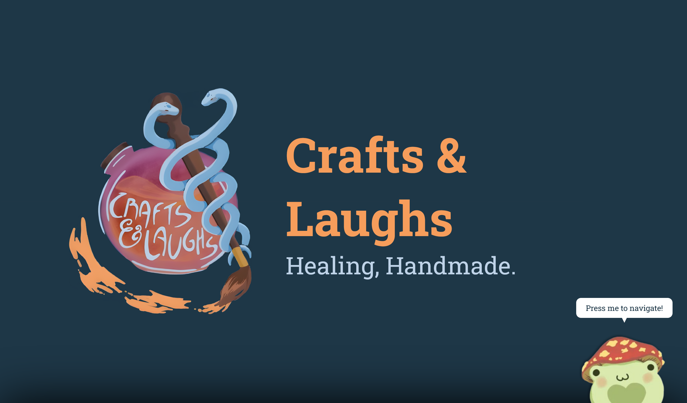

Home
Crafts and Laughs
Healing, handmade.
craftsandlaughs.org Motivations
Crafts and Laughs is a nonprofit that donates crafts to children in hospitals. This website serves as a landing page for donations, volunteers, potential members, and potential sponsors/partners.
Technical Details
This is a completely serverless, HTML/CSS/JS site.
Challenges
Finding the correct balance of interactivity and details with simplicity and accessibility was a continuous point of discussion between myself and the organization as I built the site.